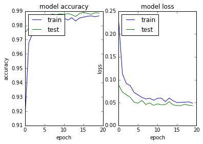

Python 3.5.2 |Anaconda custom (64-bit)| (default, Jul 5 2016, 11:41:13) [MSC v.1900 64 bit (AMD64)]
Type "copyright", "credits" or "license" for more information.
IPython 5.1.0 -- An enhanced Interactive Python.
? -> Introduction and overview of IPython's features.
%quickref -> Quick reference.
help -> Python's own help system.
object? -> Details about 'object', use 'object??' for extra details.
In [1]: runfile('C:/Users/azunre/Documents/NewKnowledge/Repositories/simon/Simon/dev/main_transfer_to_datalake_pip.py', args='--nb_epoch 20 --config text-class.19-0.02.pkl', wdir='C:/Users/azunre/Documents/NewKnowledge/Repositories/simon/Simon/dev')
Using TensorFlow backend.
The available summary of data/labels is:
[('int', 985), ('text', 1118), ('datetime', 219), ('float', 814), ('address', 91), ('boolean', 39), ('phone', 18), ('daterange', 8), ('money', 152), ('percent', 206), ('coordinates', 60), ('email', 5), ('uri', 15)]
DEBUG::Fetching address category from database
DEBUG::500 cells by 91 samples fetched...
DEBUG::Fetching boolean category from database
C:\Users\azunre\Documents\NewKnowledge\Repositories\simon\Simon\dev\FetchLabeledData.py:177: FutureWarning: comparison to `None` will result in an elementwise object comparison in the future.
if(np.any(out_array==None)):
DEBUG::500 cells by 39 samples fetched...
DEBUG::Fetching datetime category from database
DEBUG::500 cells by 219 samples fetched...
DEBUG::Fetching email category from database
DEBUG::500 cells by 5 samples fetched...
DEBUG::Fetching float category from database
DEBUG::500 cells by 814 samples fetched...
DEBUG::Fetching int category from database
DEBUG::500 cells by 985 samples fetched...
DEBUG::Fetching phone category from database
DEBUG::500 cells by 18 samples fetched...
DEBUG::Fetching text category from database
failed reading data/data.cityofnewyork.us/ParkingViolationsIssued-FiscalYear2014August2013June2014.csv
Traceback (most recent call last):
File "C:\Users\azunre\Documents\NewKnowledge\Repositories\simon\Simon\dev\FetchLabeledData.py", line 140, in FetchLabeledDataColumns
col_data = frame.ix[:,column].str[-maxlen:] #do this for large text files
File "C:\Anaconda\envs\py35\lib\site-packages\pandas\core\generic.py", line 2740, in __getattr__
return object.__getattribute__(self, name)
File "C:\Anaconda\envs\py35\lib\site-packages\pandas\core\base.py", line 241, in __get__
return self.construct_accessor(instance)
File "C:\Anaconda\envs\py35\lib\site-packages\pandas\core\strings.py", line 1841, in _make_str_accessor
raise AttributeError("Can only use .str accessor with string "
AttributeError: Can only use .str accessor with string values, which use np.object_ dtype in pandas
failed reading data/data.cityofnewyork.us/PMMRFY2015DataExtract.csv
Traceback (most recent call last):
File "C:\Users\azunre\Documents\NewKnowledge\Repositories\simon\Simon\dev\FetchLabeledData.py", line 140, in FetchLabeledDataColumns
col_data = frame.ix[:,column].str[-maxlen:] #do this for large text files
File "C:\Anaconda\envs\py35\lib\site-packages\pandas\core\generic.py", line 2740, in __getattr__
return object.__getattribute__(self, name)
File "C:\Anaconda\envs\py35\lib\site-packages\pandas\core\base.py", line 241, in __get__
return self.construct_accessor(instance)
File "C:\Anaconda\envs\py35\lib\site-packages\pandas\core\strings.py", line 1841, in _make_str_accessor
raise AttributeError("Can only use .str accessor with string "
AttributeError: Can only use .str accessor with string values, which use np.object_ dtype in pandas
failed reading data/data.cityofchicago.org/Contracts.csv
Traceback (most recent call last):
File "C:\Users\azunre\Documents\NewKnowledge\Repositories\simon\Simon\dev\FetchLabeledData.py", line 140, in FetchLabeledDataColumns
col_data = frame.ix[:,column].str[-maxlen:] #do this for large text files
File "C:\Anaconda\envs\py35\lib\site-packages\pandas\core\generic.py", line 2740, in __getattr__
return object.__getattribute__(self, name)
File "C:\Anaconda\envs\py35\lib\site-packages\pandas\core\base.py", line 241, in __get__
return self.construct_accessor(instance)
File "C:\Anaconda\envs\py35\lib\site-packages\pandas\core\strings.py", line 1841, in _make_str_accessor
raise AttributeError("Can only use .str accessor with string "
AttributeError: Can only use .str accessor with string values, which use np.object_ dtype in pandas
DEBUG::500 cells by 1115 samples fetched...
DEBUG::Fetching uri category from database
DEBUG::500 cells by 15 samples fetched...
DONE w/ SQL queries...!!!
Time elapsed for DB calls (getting data from db+multilabel postprocess) is: 1168.62 sec
C:\Anaconda\envs\py35\lib\site-packages\Simon\Simon.py:180: UserWarning: Update your `Conv1D` call to the Keras 2 API: `Conv1D(kernel_size=1, strides=1, padding="valid", kernel_initializer="glorot_normal", activation="relu", filters=40)`
subsample_length=1)(embedded)
WARNING:tensorflow:From C:\Anaconda\envs\py35\lib\site-packages\tensorflow\python\util\deprecation.py:497: calling conv1d (from tensorflow.python.ops.nn_ops) with data_format=NHWC is deprecated and will be removed in a future version.
Instructions for updating:
`NHWC` for data_format is deprecated, use `NWC` instead
C:\Anaconda\envs\py35\lib\site-packages\Simon\Simon.py:183: UserWarning: Update your `MaxPooling1D` call to the Keras 2 API: `MaxPooling1D(pool_size=2)`
embedded = MaxPooling1D(pool_length=pool_length)(embedded)
C:\Anaconda\envs\py35\lib\site-packages\Simon\Simon.py:180: UserWarning: Update your `Conv1D` call to the Keras 2 API: `Conv1D(kernel_size=3, strides=1, padding="valid", kernel_initializer="glorot_normal", activation="relu", filters=200)`
subsample_length=1)(embedded)
C:\Anaconda\envs\py35\lib\site-packages\Simon\Simon.py:180: UserWarning: Update your `Conv1D` call to the Keras 2 API: `Conv1D(kernel_size=3, strides=1, padding="valid", kernel_initializer="glorot_normal", activation="relu", filters=1000)`
subsample_length=1)(embedded)
C:\Anaconda\envs\py35\lib\site-packages\Simon\Simon.py:186: UserWarning: Update your `LSTM` call to the Keras 2 API: `LSTM(256, return_sequences=False, recurrent_dropout=0.2, implementation=2, dropout=0.2)`
dropout_U=0.2, consume_less='gpu')(embedded)
C:\Anaconda\envs\py35\lib\site-packages\Simon\Simon.py:188: UserWarning: Update your `LSTM` call to the Keras 2 API: `LSTM(256, return_sequences=False, go_backwards=True, recurrent_dropout=0.2, implementation=2, dropout=0.2)`
dropout_U=0.2, consume_less='gpu', go_backwards=True)(embedded)
C:\Anaconda\envs\py35\lib\site-packages\Simon\Simon.py:191: UserWarning: The `merge` function is deprecated and will be removed after 08/2017. Use instead layers from `keras.layers.merge`, e.g. `add`, `concatenate`, etc.
mode='concat', concat_axis=-1)
C:\Anaconda\envs\py35\lib\site-packages\keras\legacy\layers.py:464: UserWarning: The `Merge` layer is deprecated and will be removed after 08/2017. Use instead layers from `keras.layers.merge`, e.g. `add`, `concatenate`, etc.
name=name)
C:\Anaconda\envs\py35\lib\site-packages\Simon\Simon.py:195: UserWarning: Update your `Model` call to the Keras 2 API: `Model(inputs=Tensor("in..., outputs=Tensor("dr...)`
encoder = Model(input=in_sentence, output=sent_encode)
__________________________________________________________________________________________________
Layer (type) Output Shape Param # Connected to
==================================================================================================
input_2 (InputLayer) (None, 20) 0
__________________________________________________________________________________________________
lambda_1 (Lambda) (None, 20, 71) 0 input_2[0][0]
__________________________________________________________________________________________________
conv1d_1 (Conv1D) (None, 20, 40) 2880 lambda_1[0][0]
__________________________________________________________________________________________________
dropout_1 (Dropout) (None, 20, 40) 0 conv1d_1[0][0]
__________________________________________________________________________________________________
max_pooling1d_1 (MaxPooling1D) (None, 10, 40) 0 dropout_1[0][0]
__________________________________________________________________________________________________
conv1d_2 (Conv1D) (None, 8, 200) 24200 max_pooling1d_1[0][0]
__________________________________________________________________________________________________
dropout_2 (Dropout) (None, 8, 200) 0 conv1d_2[0][0]
__________________________________________________________________________________________________
max_pooling1d_2 (MaxPooling1D) (None, 4, 200) 0 dropout_2[0][0]
__________________________________________________________________________________________________
conv1d_3 (Conv1D) (None, 2, 1000) 601000 max_pooling1d_2[0][0]
__________________________________________________________________________________________________
dropout_3 (Dropout) (None, 2, 1000) 0 conv1d_3[0][0]
__________________________________________________________________________________________________
max_pooling1d_3 (MaxPooling1D) (None, 1, 1000) 0 dropout_3[0][0]
__________________________________________________________________________________________________
lstm_1 (LSTM) (None, 256) 1287168 max_pooling1d_3[0][0]
__________________________________________________________________________________________________
lstm_2 (LSTM) (None, 256) 1287168 max_pooling1d_3[0][0]
__________________________________________________________________________________________________
merge_1 (Merge) (None, 512) 0 lstm_1[0][0]
lstm_2[0][0]
__________________________________________________________________________________________________
dropout_4 (Dropout) (None, 512) 0 merge_1[0][0]
==================================================================================================
Total params: 3,202,416
Trainable params: 3,202,416
Non-trainable params: 0
__________________________________________________________________________________________________
None
C:\Anaconda\envs\py35\lib\site-packages\Simon\Simon.py:202: UserWarning: Update your `LSTM` call to the Keras 2 API: `LSTM(128, return_sequences=False, recurrent_dropout=0.2, implementation=2, dropout=0.2)`
dropout_U=0.2, consume_less='gpu')(encoded)
C:\Anaconda\envs\py35\lib\site-packages\Simon\Simon.py:204: UserWarning: Update your `LSTM` call to the Keras 2 API: `LSTM(128, return_sequences=False, go_backwards=True, recurrent_dropout=0.2, implementation=2, dropout=0.2)`
dropout_U=0.2, consume_less='gpu', go_backwards=True)(encoded)
C:\Anaconda\envs\py35\lib\site-packages\Simon\Simon.py:206: UserWarning: The `merge` function is deprecated and will be removed after 08/2017. Use instead layers from `keras.layers.merge`, e.g. `add`, `concatenate`, etc.
merged = merge([forwards, backwards], mode='concat', concat_axis=-1)
C:\Anaconda\envs\py35\lib\site-packages\Simon\Simon.py:212: UserWarning: Update your `Model` call to the Keras 2 API: `Model(inputs=Tensor("in..., outputs=Tensor("de...)`
model = Model(input=document, output=output)
Checkpoint : checkpoints/text-class.19-0.02.hdf5
C:\Anaconda\envs\py35\lib\site-packages\Simon\Simon.py:218: UserWarning: Update your `Model` call to the Keras 2 API: `Model(inputs=Tensor("in..., outputs=Tensor("de...)`
model = Model(input=document, output=output)
X shape: (3117, 500, 20)
y shape: (3117, 9)
starting learning
WARNING:tensorflow:From C:\Anaconda\envs\py35\lib\site-packages\tensorflow\contrib\learn\python\learn\datasets\base.py:198: retry (from tensorflow.contrib.learn.python.learn.datasets.base) is deprecated and will be removed in a future version.
Instructions for updating:
Use the retry module or similar alternatives.
C:\Anaconda\envs\py35\lib\site-packages\Simon\Simon.py:257: UserWarning: The `nb_epoch` argument in `fit` has been renamed `epochs`.
nb_epoch=nb_epoch, shuffle=True, callbacks=[earlystop_cb, check_cb, loss_history, tbCallBack])
Train on 1870 samples, validate on 935 samples
Epoch 1/20
1870/1870 [==============================] - 1879s 1s/step - loss: 0.2329 - binary_accuracy: 0.9137 - val_loss: 0.0888 - val_binary_accuracy: 0.9749
Epoch 2/20
1870/1870 [==============================] - 1872s 1s/step - loss: 0.1127 - binary_accuracy: 0.9680 - val_loss: 0.0731 - val_binary_accuracy: 0.9779
Epoch 3/20
1870/1870 [==============================] - 1868s 999ms/step - loss: 0.0916 - binary_accuracy: 0.9745 - val_loss: 0.0670 - val_binary_accuracy: 0.9806
Epoch 4/20
1870/1870 [==============================] - 1868s 999ms/step - loss: 0.0871 - binary_accuracy: 0.9769 - val_loss: 0.0617 - val_binary_accuracy: 0.9840
Epoch 5/20
1870/1870 [==============================] - 1868s 999ms/step - loss: 0.0721 - binary_accuracy: 0.9816 - val_loss: 0.0506 - val_binary_accuracy: 0.9869
Epoch 6/20
1870/1870 [==============================] - 1867s 998ms/step - loss: 0.0668 - binary_accuracy: 0.9827 - val_loss: 0.0487 - val_binary_accuracy: 0.9873
Epoch 7/20
1870/1870 [==============================] - 1868s 999ms/step - loss: 0.0612 - binary_accuracy: 0.9842 - val_loss: 0.0546 - val_binary_accuracy: 0.9867
Epoch 8/20
1870/1870 [==============================] - 1867s 998ms/step - loss: 0.0580 - binary_accuracy: 0.9838 - val_loss: 0.0459 - val_binary_accuracy: 0.9879
Epoch 9/20
1870/1870 [==============================] - 1871s 1s/step - loss: 0.0594 - binary_accuracy: 0.9851 - val_loss: 0.0493 - val_binary_accuracy: 0.9875
Epoch 10/20
1870/1870 [==============================] - 1889s 1s/step - loss: 0.0552 - binary_accuracy: 0.9859 - val_loss: 0.0439 - val_binary_accuracy: 0.9880
Epoch 11/20
1870/1870 [==============================] - 1887s 1s/step - loss: 0.0593 - binary_accuracy: 0.9851 - val_loss: 0.0471 - val_binary_accuracy: 0.9876
Epoch 12/20
1870/1870 [==============================] - 1884s 1s/step - loss: 0.0596 - binary_accuracy: 0.9837 - val_loss: 0.0453 - val_binary_accuracy: 0.9882
Epoch 13/20
1870/1870 [==============================] - 1884s 1s/step - loss: 0.0521 - binary_accuracy: 0.9853 - val_loss: 0.0456 - val_binary_accuracy: 0.9875
Epoch 14/20
1870/1870 [==============================] - 1885s 1s/step - loss: 0.0599 - binary_accuracy: 0.9831 - val_loss: 0.0521 - val_binary_accuracy: 0.9862
Epoch 15/20
1870/1870 [==============================] - 1886s 1s/step - loss: 0.0540 - binary_accuracy: 0.9851 - val_loss: 0.0450 - val_binary_accuracy: 0.9882
Epoch 16/20
1870/1870 [==============================] - 1881s 1s/step - loss: 0.0501 - binary_accuracy: 0.9857 - val_loss: 0.0434 - val_binary_accuracy: 0.9892
Epoch 17/20
1870/1870 [==============================] - 1881s 1s/step - loss: 0.0504 - binary_accuracy: 0.9863 - val_loss: 0.0433 - val_binary_accuracy: 0.9884
Epoch 18/20
1870/1870 [==============================] - 1884s 1s/step - loss: 0.0509 - binary_accuracy: 0.9866 - val_loss: 0.0465 - val_binary_accuracy: 0.9878
Epoch 19/20
1870/1870 [==============================] - 1885s 1s/step - loss: 0.0514 - binary_accuracy: 0.9860 - val_loss: 0.0440 - val_binary_accuracy: 0.9888
Epoch 20/20
1870/1870 [==============================] - 1887s 1s/step - loss: 0.0488 - binary_accuracy: 0.9866 - val_loss: 0.0435 - val_binary_accuracy: 0.9886
losses:
[0.23294814072180797, 0.11273686711073798, 0.091589004570184984, 0.087078275436655, 0.072121368906022429, 0.066805443227824002, 0.061201708978988273, 0.058035610495807535, 0.059405626058030653, 0.055193293640168416, 0.059277537204748529, 0.059602493699764544, 0.052081310375155336, 0.059906279632104514, 0.053958454345201044, 0.050086977394835593, 0.05036985620645866, 0.050868373057608281, 0.051408754428537352, 0.048819483320084324]
accuracies:
[0.97492572489906759, 0.97789661163952257, 0.98062982724949643, 0.98395721957007831, 0.98692810344186055, 0.98728461061569461, 0.98669043294886216, 0.98787878764504422, 0.98752228078995163, 0.98799762273217262, 0.98764111651456288, 0.98823529386265396, 0.98752228174617585, 0.98621509228160675, 0.98823529418139533, 0.98918597679087183, 0.988354128631041, 0.98775995192043287, 0.98882947057326209, 0.98859180008026371]
Time for training is 37588.012854 sec

Starting predictions:
Accuracy: 98.89%
Time: 20.109374046325684s
Time/example : 0.06466036670844272s/ex
311/311 [==============================] - 20s 66ms/step
Remember that the fixed categories are:
['address', 'boolean', 'datetime', 'email', 'float', 'int', 'phone', 'text', 'uri']
Most Likely Predicted Category/Labels are:
['int' 'text' 'int' 'int' 'float' 'text' 'text' 'text' 'text' 'text' 'int'
'int' 'text' 'int' 'text' 'int' 'text' 'int' 'text' 'int' 'int' 'text'
'text' 'text' 'float' 'int' 'float' 'float' 'int' 'text' 'text' 'text'
'text' 'int' 'text' 'float' 'text' 'float' 'int' 'datetime' 'int' 'int'
'float' 'text' 'int' 'float' 'float' 'float' 'text' 'int' 'int' 'int'
'int' 'text' 'float' 'int' 'int' 'datetime' 'text' 'text' 'int' 'datetime'
'int' 'float' 'float' 'text' 'text' 'text' 'datetime' 'text' 'int' 'int'
'float' 'int' 'text' 'float' 'int' 'int' 'int' 'float' 'int' 'float'
'text' 'int' 'float' 'int' 'int' 'datetime' 'float' 'text' 'float'
'datetime' 'text' 'int' 'float' 'float' 'int' 'float' 'text' 'float'
'text' 'text' 'float' 'int' 'text' 'text' 'int' 'int' 'text' 'float'
'text' 'float' 'text' 'datetime' 'int' 'int' 'float' 'int' 'text' 'float'
'datetime' 'float' 'text' 'datetime' 'text' 'text' 'text' 'int' 'float'
'text' 'text' 'int' 'text' 'float' 'int' 'float' 'int' 'text' 'datetime'
'int' 'text' 'text' 'int' 'float' 'text' 'text' 'text' 'int' 'text'
'datetime' 'int' 'text' 'int' 'text' 'int' 'float' 'text' 'int' 'datetime'
'text' 'int' 'int' 'int' 'text' 'int' 'float' 'text' 'text' 'datetime'
'text' 'int' 'datetime' 'text' 'int' 'text' 'datetime' 'int' 'int' 'text'
'int' 'int' 'float' 'float' 'float' 'float' 'text' 'float' 'float' 'text'
'text' 'text' 'float' 'text' 'int' 'float' 'text' 'float' 'text' 'text'
'text' 'text' 'int' 'text' 'text' 'text' 'datetime' 'datetime' 'int'
'datetime' 'int' 'text' 'text' 'text' 'int' 'boolean' 'text' 'text'
'float' 'int' 'text' 'int' 'int' 'int' 'int' 'text' 'int' 'int' 'float'
'int' 'float' 'text' 'int' 'int' 'float' 'text' 'int' 'text' 'boolean'
'float' 'text' 'text' 'text' 'text' 'float' 'text' 'datetime' 'float'
'text' 'float' 'int' 'float' 'text' 'text' 'int' 'int' 'text' 'int' 'text'
'float' 'int' 'int' 'boolean' 'int' 'text' 'float' 'int' 'int' 'boolean'
'text' 'int' 'text' 'int' 'float' 'float' 'text' 'text' 'int' 'float'
'float' 'text' 'text' 'int' 'int' 'int' 'text' 'text' 'float' 'float'
'int' 'text' 'datetime' 'text' 'float' 'float' 'float' 'float' 'int' 'int'
'int' 'int' 'text' 'float' 'text' 'text' 'int' 'float' 'float' 'float'
'float' 'int' 'float']
Associated max probabilities/confidences:
[ 0.98988473 0.98698074 0.98835933 0.98988652 0.99976665 0.9953863
0.97147536 0.99245936 0.99555957 0.99480575 0.99008501 0.99001008
0.99311841 0.988877 0.97576183 0.99086177 0.99611926 0.99080288
0.9873029 0.98989314 0.99059474 0.99230629 0.99608445 0.98414236
0.99983287 0.98820728 0.99978691 0.99973661 0.99049741 0.99614549
0.99312663 0.99234515 0.99607641 0.99104029 0.99014705 0.9998281
0.9885478 0.99977261 0.98351663 0.95641232 0.99055332 0.99058121
0.99983275 0.99499232 0.99026591 0.99982482 0.99982929 0.99843627
0.99355525 0.98984629 0.98946941 0.99104041 0.99082911 0.99146932
0.99983072 0.98868132 0.9900704 0.95849705 0.99650145 0.99629325
0.97413528 0.98269707 0.99079353 0.99976617 0.99969339 0.99015146
0.99526548 0.45490828 0.9827556 0.9947542 0.9770124 0.94611812
0.99909246 0.98960072 0.78728092 0.99976557 0.99074811 0.99097669
0.99050975 0.99982423 0.98942673 0.99980015 0.99305254 0.98934722
0.99983525 0.98897153 0.98973572 0.95155787 0.99983227 0.99280435
0.99482489 0.95493299 0.98489422 0.99104792 0.99983346 0.99978536
0.98934853 0.9998306 0.99616385 0.99983203 0.99538112 0.99524951
0.99919671 0.99133158 0.99173534 0.99494803 0.98929298 0.99037737
0.99544662 0.99983358 0.99359185 0.99983263 0.98937398 0.9526673
0.99003196 0.98903811 0.99977678 0.98921669 0.99288428 0.99983227
0.95935667 0.99983227 0.9958871 0.98160177 0.99123222 0.99099332
0.98525548 0.98926532 0.99982315 0.99374264 0.90636653 0.98963684
0.99080276 0.99775821 0.99033898 0.99983227 0.9558478 0.99474406
0.95608056 0.99097669 0.99547899 0.99549794 0.99045336 0.99938846
0.99494016 0.99529737 0.99491161 0.99097681 0.99547631 0.94907689
0.9898296 0.99307996 0.9911232 0.99525934 0.98776054 0.99919099
0.99432796 0.99067819 0.98273212 0.99269354 0.99025589 0.9884212
0.98873413 0.99551541 0.98978639 0.99909651 0.99280435 0.99280435
0.57256788 0.99395519 0.98603708 0.95155096 0.99341279 0.98855746
0.99528682 0.77541178 0.99076664 0.98826677 0.99643481 0.98900676
0.99110305 0.99983239 0.97169614 0.99983191 0.9998318 0.99477923
0.99982065 0.99962306 0.99551827 0.9961133 0.99558663 0.99982423
0.99487829 0.9905194 0.99977964 0.99483997 0.99969518 0.99552333
0.76487011 0.99653012 0.99459165 0.99097669 0.99653304 0.99134189
0.99585658 0.98160189 0.69095802 0.99100846 0.94995457 0.99051064
0.99604529 0.99514681 0.99524987 0.98882014 0.5467276 0.99359459
0.95062327 0.99982965 0.9894163 0.98678058 0.98947304 0.99015194
0.99099952 0.98874635 0.98978454 0.98991829 0.99118656 0.99923658
0.98924237 0.99982917 0.96767467 0.9897446 0.99109018 0.99983287
0.9957729 0.98898762 0.99588782 0.54545677 0.99983096 0.99540859
0.98816085 0.99484032 0.99226922 0.99979669 0.99626935 0.9818325
0.99982518 0.99615151 0.99947816 0.99031353 0.99653 0.99501085
0.99495924 0.98955148 0.98865509 0.99420917 0.96615911 0.97438759
0.99982172 0.99077374 0.57883161 0.53355491 0.99089253 0.97130382
0.99983501 0.99097681 0.98018551 0.54519981 0.5947957 0.98824394
0.99381518 0.99017477 0.99983346 0.99983025 0.99536502 0.99550277
0.98116404 0.9993642 0.99983013 0.99605429 0.96719533 0.99048448
0.99090064 0.98996288 0.99375808 0.99413586 0.99980015 0.99939299
0.98416394 0.9954828 0.98273522 0.98923361 0.99981695 0.99981242
0.96515232 0.99980038 0.98984629 0.98924285 0.99031991 0.99018794
0.98592353 0.44612229 0.9953987 0.99255145 0.99056083 0.55682999
0.99981922 0.99969327 0.99980754 0.99097705 0.99928325]
DEBUG::y_test:
[[0 0 0 ..., 0 0 0]
[0 0 0 ..., 0 1 0]
[0 0 0 ..., 0 0 0]
...,
[0 0 0 ..., 0 0 0]
[0 0 0 ..., 0 0 0]
[0 0 0 ..., 0 0 0]]
DEBUG::y_pred:
[[ 0. 0. 0. ..., 0. 0. 0.]
[ 0. 0. 0. ..., 0. 1. 0.]
[ 0. 0. 0. ..., 0. 0. 0.]
...,
[ 0. 0. 0. ..., 0. 0. 0.]
[ 0. 0. 0. ..., 0. 0. 0.]
[ 0. 0. 0. ..., 0. 0. 0.]]
'Binary' accuracy (true positives + true negatives) is:
(0.98892461593426229, array([ 0.97106109, 0.99356913, 0.98392283, 1. , 0.99356913,
0.9903537 , 0.98713826, 0.98713826, 0.99356913]), array([[ 1., 1., 1., ..., 1., 1., 1.],
[ 1., 1., 1., ..., 1., 1., 1.],
[ 1., 1., 1., ..., 1., 1., 1.],
...,
[ 1., 1., 1., ..., 1., 1., 1.],
[ 1., 1., 1., ..., 1., 1., 1.],
[ 1., 1., 1., ..., 1., 1., 1.]]))
'Binary' confusion (false positives + false negatives) is:
(0.011075384065737763, array([ 0.02893891, 0.00643087, 0.01607717, 0. , 0.00643087,
0.0096463 , 0.01286174, 0.01286174, 0.00643087]), array([[ 0., 0., 0., ..., 0., 0., 0.],
[ 0., 0., 0., ..., 0., 0., 0.],
[ 0., 0., 0., ..., 0., 0., 0.],
...,
[ 0., 0., 0., ..., 0., 0., 0.],
[ 0., 0., 0., ..., 0., 0., 0.],
[ 0., 0., 0., ..., 0., 0., 0.]]))
False positive matrix is:
(9.0, array([ 0., 0., 0., 0., 2., 2., 3., 2., 0.]), array([[ 0., 0., 0., 0., 0., 0., 0., 0., 0.],
[ 0., 0., 0., 0., 0., 0., 0., 2., 0.],
[ 0., 0., 0., 0., 0., 2., 2., 0., 0.],
[ 0., 0., 0., 0., 0., 0., 0., 0., 0.],
[ 0., 0., 0., 0., 0., 0., 0., 0., 0.],
[ 0., 0., 0., 0., 2., 0., 0., 0., 0.],
[ 0., 0., 0., 0., 0., 0., 0., 0., 0.],
[ 0., 0., 0., 0., 0., 0., 1., 0., 0.],
[ 0., 0., 0., 0., 0., 0., 0., 0., 0.]]))
In [2]: